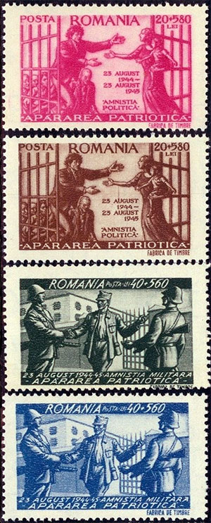
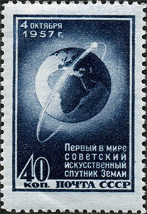
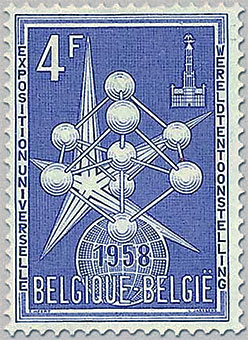

Selection
A curated introduction to Romanian history, art and culture through original postage stamps and philatelic research.
 Romanian Views
Romanian Views Cult of Personality
Cult of Personality
Patriotic Defense 1945 General Exposition 1906
General Exposition 1906 Nudes,by Grigorescu
Nudes,by Grigorescu Event at EFIRO 2008
Event at EFIRO 2008
Sputnik I and II - 1957 OSP 1948 Minisheets
OSP 1948 Minisheets Nadia Comaneci
Nadia Comaneci The Milking Cows
The Milking Cows
Brussels 1958 Overprints Odessa Massacre
Odessa Massacre Repetition of Postal History
Repetition of Postal History Frustrating Sheets
Frustrating Sheets Champions to Be Forgotten
Champions to Be Forgotten Encounter with My Philatelic Youth
Encounter with My Philatelic Youth Stamps Printing and Printing...
Stamps Printing and Printing... Davai Ceas
Davai CeasComplete article directory
Romanian ViewsCult of PersonalityPatriotic Defense 1945General Exposition 1906Nudes,by GrigorescuEvent at EFIRO 2008Sputnik I and II - 1957OSP 1948 MinisheetsNadia ComaneciThe Milking CowsBrussels 1958 OverprintsSad Story of a SculptureOdessa MassacreRepetition of Postal HistoryFrustrating SheetsChampions to Be ForgottenEncounter with My Philatelic YouthStamps Printing and Printing...Davai Ceas
Articles retain their original text and illustrations in the refreshed layout.